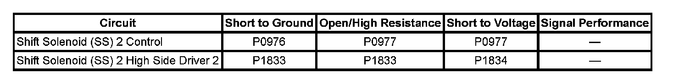
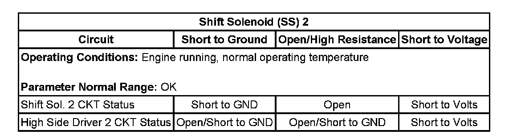
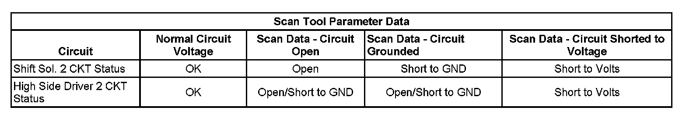

6L50 / 6L80 / 6L90 Automatic Transmission
DTC P0976 or P0977
DTC Descriptors
DTC P0976
Shift Solenoid (SS) 2 Control Circuit Low Voltage
DTC P0977
Shift Solenoid (SS) 2 Control Circuit High Voltage
Diagnostic Fault Information
Perform the Diagnostic System Check - Vehicle prior to using this diagnostic procedure. Initial Inspection and Diagnostic Overview

Typical Scan Tool Data

Circuit/System Description
The shift solenoid (SS) 2 is part of the control solenoid (w/body and TCM) valve assembly and is not serviced separately. The TCM supplies 12 volts to SS 2 on the high side driver 2 circuit. The TCM controls the normally closed SS 2 on the SS 2 control circuit. The SS 2 controls the transmission fluid to the Mode-3 valve. In the ON position the 4-5-6 clutch is fed by drive fluid. In the OFF position, Reverse fluid is allowed to flow and is supplied to the low and reverse clutch and the 4-5-6 clutch assemblies.
Conditions for Running the DTC
^ The engine run time is greater than 5 seconds.
^ The SS 2 is commanded ON or OFF.
Conditions for Setting the DTC
DTC P0976
The TCM detects an internal low voltage electrical malfunction of the SS 2 control circuit when the SS 2 is commanded OFF for 300 milliseconds.
DTC P0977
The TCM detects an internal high voltage electrical malfunction of the SS 2 control circuit when the SS 2 is commanded ON for 300 milliseconds.
Action Taken When the DTC Sets
^ DTCs P0976 and P0977 are Type A DTCs.
^ The TCM defaults the transmission to 3rd gear if the current gear is 1st, 2nd, or 3rd, or 5th gear if the current gear is 4th, 5th, or 6th gear.
^ The TCM inhibits the torque converter clutch (TCC).
^ The TCM commands maximum line pressure.
^ The TCM freezes transmission adaptive functions.
Conditions for Clearing the DIC/DTC
DTCs P0976 and P0977 are Type A DTCs.
Diagnostic Aids
When attempting to set solenoid electrical DTCs, ensure the TCM is warmed up and the transmission is operated in 2nd gear long enough to ensure a 3° C (5° F) increase in TCM substrate temperature. This will place the TCM under the optimal conditions to test solenoid electrical DTCs.
Reference Information
Schematic Reference
Automatic Transmission Controls Schematics
Connector End View Reference
^ Automatic Transmission Inline 16-Way Connector End View
^ Automatic Transmission Internal Connector End Views
^ Automatic Transmission Related Connector End Views
DTC Type Reference
^ Diagnostic Trouble Code (DTC) Type Definitions
^ Diagnostic Trouble Code (DTC) List/Type
Electrical Information Reference
^ Circuit Testing
^ Connector Repairs
^ Testing for Intermittent Conditions and Poor Connections
^ Wiring Repairs
Scan Tool Reference
^ Scan Tool Output Controls
^ Scan Tool Data List
^ Scan Tool Data Definitions

Circuit/System Testing
1. Ensure the transmission fluid temperature is between 50-80° C (122-176° F).
2. Operate the vehicle in 4th, 5th, or 6th gear with TCC applied, long enough to ensure at least a 3° C (5° F) rise in TCM substrate temperature.
3. Observe the scan tool data parameter Shift Sol. 2 CKT Status. The parameter should display OK.
^ If the parameter displays Open, Short to Volts, Short to GND, or if the DTC resets, perform the Control Solenoid Valve and Transmission Control Module Assembly Inspection. Control Solenoid Valve and Transmission Control Module Assembly Inspection
^ If no concerns are found during the inspection, replace the control solenoid (w/body and TCM) valve assembly.
Repair Instructions
Perform the Diagnostic Repair Verification after completing the diagnostic procedure. Verification Tests
1. Control solenoid (w/body and TCM) valve assembly replacement. Refer to Control Module References for replacement, setup, and programming. Programming and Relearning
2. Perform the Service Fast Learn Adapts. Programming and Relearning